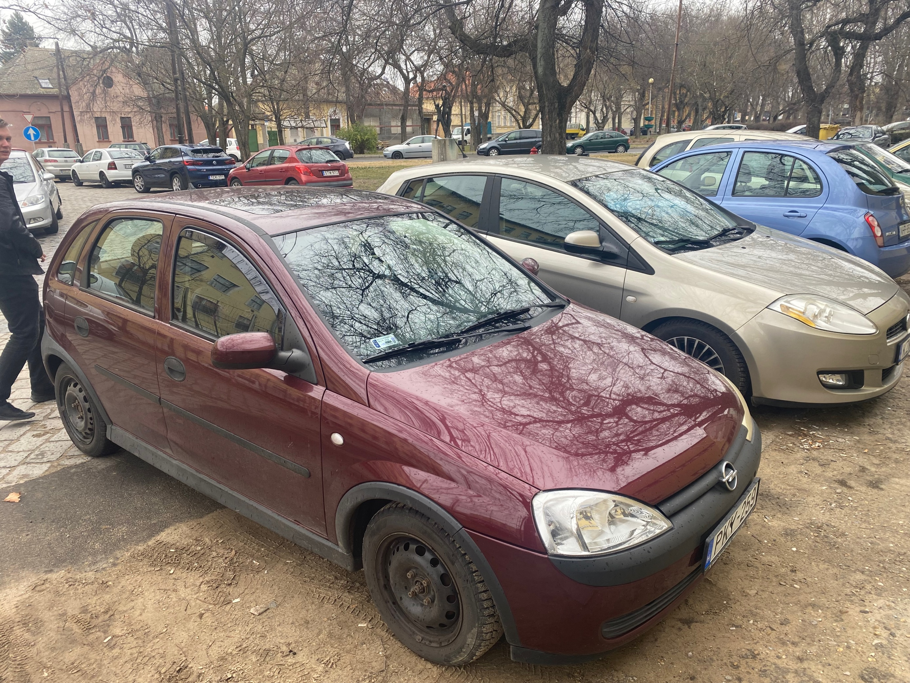

Az oktató
Autó adatai
Gyártási adatok
| Megnevezés | Adat |
|---|---|
| Gyártási hely | Németország |
| Gyártási év | 2001 |
| Szín | Bordó |
Tömeg, méretek
| Megnevezés | Adat (kg, mm) |
|---|---|
| Hossz | 3817 mm |
| Szélesség | 1645 mm |
| Magasság | 1440 mm |
| Tömeg | 1430 kg |
Teljesítmény
| Megnevezés | Adat |
|---|---|
| Motor | 1.2 liter 4-hengeres |
| Váltó | Ötsebességes manuális |
| Végsebesség | 170 km/h |
Érdekes tények
- Vízpumpák pusztítója
- Szeret a jobb elülső lámpája kiégni
- Könnyű vezetni
